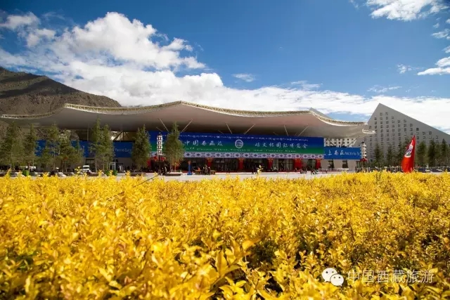

西藏日报

8日下午，参加第三届藏博会产品展销活动的219位尼籍商人全部抵达拉萨，他们分别来自110家尼泊尔企业，较上一届藏博会尼方参展人数和企业分别增加120%、148.8%。尼泊尔商人组团赴藏“捞金”，再次刷新藏博会逐年扩大的国际关注度和影响力。
尼泊尔商会会长、尼中工商会会长Rajesh在接受西藏日报记者采访时表示，他连续三年参加藏博会展销活动，特别是去年藏博会上尼泊尔参展商品被抢购一空，为此他们今年经过3个月的精心准备，挑选了佛像、铜器、地毯等尼泊尔手工艺精品参加展销，希望能继续受到市场欢迎。
“去年尼泊尔地震后，目前还处在重建期，这次我们带来的手工艺品，很多都是地震灾区群众加工生产的，我们也希望借助藏博会进一步扩大对中国的贸易出口，为当地群众增加就业机会和收入。”Rajesh表示，目前每年大约有8000种尼泊尔商品销往中国西藏，他相信随着西藏逐步融入“一带一路”发展战略和“南亚大通道”建设的深入推进，尼泊尔也将从中受益，获得更大的外贸订单。
去年藏博会期间，尼泊尔唐卡商人Prakash的200余幅唐卡短时间内迅速售罄，为此今年他“雄心勃勃”地带来了1000多幅从几十元到数万元价格不等的唐卡。“尼泊尔唐卡的优势在于相对较低的价格。”Prakash说，“中国是我们的重要市场，藏博会为我带来更多机会，我非常看重这个平台。”他告诉记者，随着西藏有竞争力的特色产品越来越多，他正计划藏博会期间寻找新的商业机会。
据自治区商务厅相关负责人介绍，本届藏博会展销活动将有来自国内外的240家企业参展。参展产品不仅有尼泊尔、印度的手工艺品，同时还有我区的天然饮用水、唐卡、藏药、藏香、藏毯等特色产品以及内地茶叶、家纺、瓷器、玉器等产品。